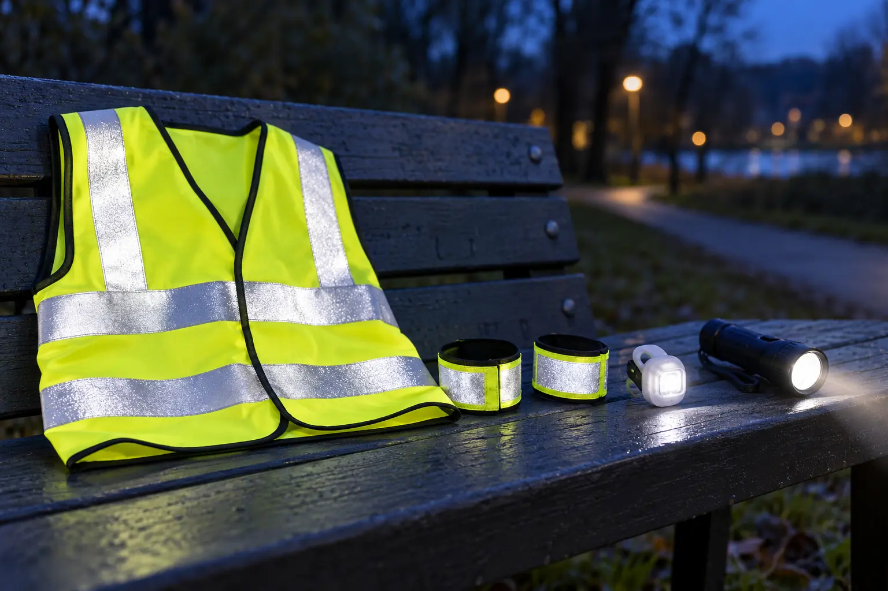

Retroreflective vest
Best default: broad torso coverage over the actual coat or backpack straps.
Tradeoff: can twist, ride up or disappear under another layer; generic high-vis color does not prove nighttime reflectivity.
GEAR GUIDE · DUSK WALKS · VISIBILITY IS NOT RIGHT-OF-WAY
Choose the safe route first. Then add gear that helps drivers detect a moving person without pretending a bright vest can cancel darkness, speed or distraction.

Fluorescent material, retroreflective material and an active light are not interchangeable. Bright fluorescent colors can stand out in daylight. Retroreflective material returns light toward its source, which is why it matters when headlights illuminate it. A clip light produces its own light, but its direction, brightness, battery state, mounting angle and surroundings all affect whether another road user notices it.
NHTSA advises pedestrians to use sidewalks when available, cross at intersections or crosswalks where possible, stay predictable and wear reflective material or use a flashlight at night. Its review of conspicuity research also warns that visibility aids do not overcome risky behavior such as driver distraction. That distinction is the whole guide: visibility gear can improve detection; it cannot create a safe crossing or transfer responsibility away from the adult.
Use the family weather cutoff plan before leaving. Wet pavement, glare, snowbanks, fog and dark clothing can change what drivers and walkers perceive. A calm 15-minute loop on a separated path beats a dramatic mile on the edge of traffic.
Choose a vest by the exact outer layer, not the child’s T-shirt size. Test it over the bulkiest coat the child will wear. The closure should stay shut during arm swings, the hem should not catch the knees, and reflective areas should remain visible from the front, back and sides rather than folding under a backpack. Follow the maker’s size, age, care and replacement instructions.
Do not assume every fluorescent vest uses effective retroreflective material. Read the actual product description and labeling. This page does not claim that a consumer walking vest meets a workplace or road-worker standard, and a certification intended for one use does not automatically make the item suitable for a child. If a program, school or event specifies a standard, use its exact requirement.
NHTSA’s research summary notes that retroreflective material on moving extremities can make a person easier to detect at night. That does not mean any snap band is effective or child-safe. Compare material claims, visible surface area, fastening method and fit. A band should remain flat and comfortable through walking, crouching and coat movement.
Skip bands that leave sharp edges, pop open, constrict, slide over shoes or create a tempting toy during a street crossing. Do not put a loose band around a neck or attach one where it can catch playground equipment. For younger children, the adult should control and inspect the accessory before every use.
A clip light can help identify a walker when it faces the relevant direction and remains on. Compare steady and flashing modes, mounting security, controls, battery type, runtime claims, charging instructions and the maker’s exact weather-resistance statement. A bright mode that destroys the family’s own night vision or points into another walker’s eyes solves the wrong problem.
Mounting matters more than the lumen headline. A light hidden by a coat fold, backpack or child’s arm is not doing its intended job. Coin-cell batteries and small removable parts require strict attention to the manufacturer’s age and safety instructions and secure storage away from children. If the clip cannot stay oriented during an indoor shake-and-walk check, return it.
Run this check indoors or on private property away from moving vehicles. It is a fit check, not a visibility certification.
If fit, comfort or attachment fails, the product is not a match. Do not fix a bad vest with improvised cords, pins or dangling clips. Return it and use a shorter daylight route.
No item on this page was hands-on tested. If the route still needs a gear layer, compare the retroreflective vest, motion-marking band and clip-light categories below. The links are paid Amazon links. Check dimensions, materials, battery access, care, return terms and the maker’s current claims on the exact item.
Do not buy a novelty LED costume as a substitute for a walking plan. Skip vague “glow” products that do not say whether they are fluorescent, reflective, retroreflective or powered. Skip a vest sized so large that it twists or catches, a band with no stable fit and a clip light with an exposed battery door or unreliable switch. Do not buy three accessories when one well-fitted vest plus an adult-held flashlight solves the real need.
A headlamp helps the wearer see a path but can be badly aimed for being seen by drivers. Compare that separate job in the family lighting guide. For the transition from car to trail, pair the system with the parking-lot regroup rule.
Skip a low-light road walk when a child cannot yet follow stop-and-wait directions, the only route lacks a safe walking space, weather obscures visibility or the adult cannot actively supervise every crossing. Change the gear for sensory aversion, mobility equipment, medical devices or outerwear that prevents a safe fit. Ask the child’s clinician or equipment provider when an accessory could interfere with required equipment.
MAKE THE DAY COUNT
Build the plan your family can finish well, then leave enough energy for the next part of the day.
More family plansTHE USEFUL STUFF
These are practical categories to compare—not a reason to overpack. Check fit, specifications and current reviews before buying.
Paid links: As an Amazon Associate I earn from qualifying purchases. You pay no additional cost.
Check the actual outer-layer fit, closure, visible coverage, materials and the maker's exact reflectivity and care claims.
See current options → COMPARE ON AMAZONCompare secure fit, reflective area, edge comfort and whether the band stays visible on a moving wrist or ankle.
See current options → COMPARE ON AMAZONVerify mounting security, controls, battery access, runtime, charge method and the maker's exact weather-resistance statement.
See current options →